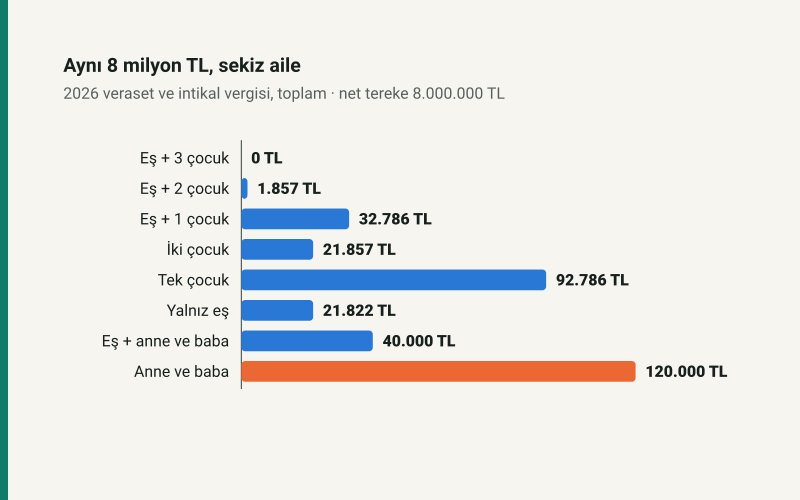

Kısa cevap
Veraset ve intikal vergisi mirasın tamamına değil, her mirasçının payına ayrı ayrı hesaplanır ve 2026'da her çocuğun ve eşin payından 2.907.136 TL istisna düşülür. Ev de piyasa değeriyle değil emlak vergisi değeriyle hesaba girer. Bu yüzden eş ve iki çocuk bırakan birinin mirasında vergi, net tereke 7.752.363 TL'yi aşana kadar hiç çıkmaz.
İstisnasız tek grup ana-babadır. Çocuksuz ölen birinden anne-babaya kalan payda vergi ilk liradan başlar.
Vergi nasıl hesaplanır?
Önce tereke bulunur: taşınmazlar emlak vergisi değeriyle, para ve menkuller rayiç değerle toplanır; murisin belgeli borçları ve cenaze masrafı düşülür (7338 sayılı Kanun m.10 ve m.12). Sonra tereke yasal paylara bölünür: çocuk varsa eşe 1/4, çocuklara 3/4; çocuk yoksa eşe 1/2, ana-babaya 1/2. Her mirasçının payından istisnası düşülür ve kalana artan oranlı tarife uygulanır: ilk 3.000.000 TL için %1, sonraki 7.000.000 TL için %3, sonra %5, %7 ve %10.
Aynı miras, sekiz aile
8.000.000 TL net tereke, farklı mirasçılarla. Son sütun verginin başladığı tereke tutarı: bu tutarın altında hiçbir mirasçı vergi ödemez.
| Mirasçılar | Toplam vergi | Terekeye oranı | Vergi başladığı tereke |
|---|---|---|---|
| Eş + 3 çocuk | 0,00 TL | %0,00 | 11.628.544 TL |
| Eş + 2 çocuk | 1.857,28 TL | %0,02 | 7.752.363 TL |
| Eş + 1 çocuk | 32.785,92 TL | %0,41 | 3.876.182 TL |
| İki çocuk | 21.857,28 TL | %0,27 | 5.814.272 TL |
| Tek çocuk | 92.785,92 TL | %1,16 | 2.907.136 TL |
| Yalnız eş | 21.821,55 TL | %0,27 | 5.817.845 TL |
| Eş + anne ve baba | 40.000,00 TL | %0,50 | ilk liradan |
| Anne ve baba | 120.000,00 TL | %1,50 | ilk liradan |
Tabloda iki kural görülüyor. Birincisi, mirasçı sayısı arttıkça vergi düşüyor: istisna kişi başına işliyor ve her yeni mirasçı bir istisna daha getiriyor. İkincisi, ana-babanın payı istisnasız: eş ve anne-baba mirasçıyken eşin payı istisna içinde kalsa bile anne ve babanın payının her lirası vergileniyor.
Evin hangi değeri?
Kanun açık: gayrimenkuller emlak vergisine esas olan değerle değerlenir (m.10/b). Bu değer her yıl belediyenin emlak vergisi tahakkukunda yazar ve çoğu zaman piyasa değerinin altındadır. Piyasa değeri 15 milyon TL olan bir evin emlak vergisi değeri bunun çok altındaysa, tablodaki eşiklere piyasa değeriyle değil o değerle bakılır. Mevduat, altın, fon ve araç ise rayiç değerle girer; mirasın büyük kısmı bankada duruyorsa hesap bu yüzden değişir.
Aynı aile için tereke büyüdükçe vergi şöyle artıyor: eş ve iki çocuk, 15.000.000 TL net terekede toplam 62.785,92 TL vergi öder, terekenin %0,42'si. Eşin payı (3.750.000 TL) yine istisnaya yakın kalır; verginin çoğu çocukların payından çıkar.
Süre ve ödeme
- Beyanname, ölüm Türkiye'deyse ve mirasçılar Türkiye'deyse ölüm tarihini izleyen dört ay içinde verilir (m.9).
- Vergi üç yılda, her yıl mayıs ve kasımda olmak üzere altı eşit taksitte ödenir (m.19).
- Taşınmaz mirasçılar adına tescil edilir; ama o taşınmaza düşen vergi tamamen ödenmeden satış ve devir yapılamaz, tapu vergi dairesinden ilişik kesme belgesi ister (m.19).
Kendi hesabınız
Veraset ve intikal vergisi hesaplama aracına taşınmazın emlak vergisi değerini, mevduatı ve mirasçıları girin; mirasçı başına pay, istisna, vergi ve taksit tutarını gösterir. Evi sağlığında çocuğa devretmeyi düşünüyorsanız önce şunu okuyun: bağış mı miras mı?
Kaynaklar
- 7338 sayılı Veraset ve İntikal Vergisi Kanunu m.4, m.9, m.10, m.12, m.16, m.19 (Mevzuat Bilgi Sistemi, konsolide metin).
- VİVK Genel Tebliği Seri No: 57, Resmî Gazete 31.12.2025, sayı 33124 (5. Mükerrer): 2026 istisna tutarları ve tarife dilimleri.
- 4721 sayılı Türk Medeni Kanunu m.495–499 (yasal mirasçılar).
Tablodaki bütün tutarlar sitenin açık kaynaklı veraset modülünden üretilir ve otomatik testle yeniden hesaplanır. Yazı 2026 tutarlarına çivilidir. Vasiyetname, saklı pay ve eşin mal rejiminden aldığı pay hesaba katılmamıştır.
Sık sorulan sorular
Miras kalan evde vergi hangi değerden hesaplanır?
Emlak vergisine esas olan değerden (7338 sayılı Kanun m.10/b). Piyasa değeri kullanılmaz; değer belediyenin emlak vergisi tahakkukunda yazar.
2026'da mirasta vergi istisnası ne kadar?
Her çocuk ve eş için 2.907.136 TL; çocuk yoksa eş için 5.817.845 TL. İstisna mirasçı başına uygulanır.
Anne-babaya kalan mirasta vergi var mı?
Var ve istisna yok. Çocuksuz ölen birinden 8.000.000 TL'lik terekeyi yalnız anne ve baba alırsa toplam vergi 120.000 TL'dir.
Veraset vergisi taksitle ödenebilir mi?
Evet, üç yılda, mayıs ve kasım aylarında altı eşit taksitte ödenir. Taşınmazın satışı ise ona düşen vergi ödenmeden yapılamaz.